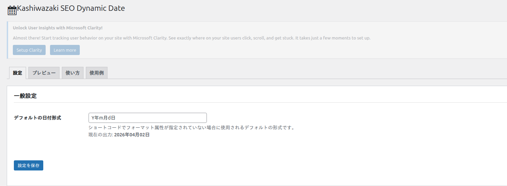
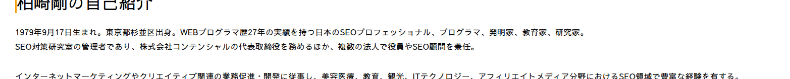

ショートコードの使い方
[ksdate] ショートコードの属性・オフセット・日付差計算について詳しく解説します。
基本構文
[ksdate]属性を指定しない場合、管理画面で設定したデフォルトフォーマット（初期値: Y年m月d日）で今日の日付が表示されます。

フロントエンド表示例

属性一覧
| 属性 | 説明 |
|---|---|
| format | PHPの日付フォーマット文字列。省略時はデフォルトフォーマットを使用。例: Y年m月d日, Y/m/d |
| offset | 今日の日付からのオフセット。+3d（3日後）、-1m（1ヶ月前）など。省略時はオフセットなし |
| diff | 指定した日付から今日までの差分を計算。2020（年差）、2020-01（月差）、2020-01-15（日差）の形式に対応 |
diff 属性と offset 属性を同時に指定した場合、diff が優先されます。
日付フォーマット（format属性）
format 属性にはPHPの date() 関数と同じフォーマット文字列を使用します。内部的には wp_date() を使用しているため、WordPressのタイムゾーン設定が反映されます。
| 記述例 | 出力例 |
|---|---|
| [ksdate] | 2026年04月01日（デフォルト） |
| [ksdate format="Y/m/d"] | 2026/04/01 |
| [ksdate format="Y-m-d"] | 2026-04-01 |
| [ksdate format="Y年m月"] | 2026年04月 |
| [ksdate format="Y"] | 2026 |
| [ksdate format="n月j日"] | 4月1日 |
オフセット計算（offset属性）
offset 属性を使うと、今日の日付に対して加算・減算した日付を表示できます。フォーマットは [+-]数値[ymwd] です。
オフセット単位
| 記号 | 単位 |
|---|---|
| y | 年（years） |
| m | 月（months） |
| w | 週（weeks） |
| d | 日（days） |
オフセットの使用例
| 記述例 | 説明 |
|---|---|
| [ksdate offset="+3d"] | 3日後の日付 |
| [ksdate offset="-7d"] | 7日前（1週間前）の日付 |
| [ksdate offset="+1m"] | 1ヶ月後の日付 |
| [ksdate offset="-1m"] | 先月の日付 |
| [ksdate offset="+2w"] | 2週間後の日付 |
| [ksdate offset="+1y"] | 1年後の日付 |
| [ksdate offset="-1y" format="Y"] | 去年の年号（例: 2025） |
「この記事は [ksdate] 時点の情報です」「キャンペーン期間: [ksdate] 〜 [ksdate offset="+30d"]」のように活用できます。
日付差計算（diff属性）
diff 属性を使うと、指定した日付から今日までの差分を自動算出して表示します。経過年数・経過月数・経過日数の表示に活用できます。
diff属性のフォーマット
| 入力形式 | デフォルト計算単位 |
|---|---|
| YYYY（例: 2020） | 年差（years） |
| YYYY-MM（例: 2020-01） | 月差（months） |
| YYYY-MM-DD（例: 2020-01-15） | 日差（days） |
format属性による単位の上書き
diff 属性と format 属性を組み合わせると、出力に単位テキストを付与したり、計算単位を変更したりできます。
| format内の文字 | 効果 |
|---|---|
| 「年」を含む | 年単位で計算し「年」を付与（例: 6年） |
| 「月」または「ヶ月」を含む | 月単位で計算し「ヶ月」を付与（例: 72ヶ月） |
| 「日」を含む | 日単位で計算し「日」を付与（例: 2192日） |
日付差の使用例
| 記述例 | 説明・出力例 |
|---|---|
| [ksdate diff="2020"] | 2020年からの経過年数（例: 6） |
| [ksdate diff="2020" format="年"] | 2020年からの経過年数＋単位（例: 6年） |
| [ksdate diff="2020-01" format="ヶ月"] | 2020年1月からの経過月数（例: 75ヶ月） |
| [ksdate diff="2024-01-01" format="日"] | 2024年1月1日からの経過日数（例: 821日） |
| [ksdate diff="2030"] | 未来の日付の場合も差分を計算（例: 4） |
「創業 [ksdate diff="1999" format="年"] 目」「サービス開始から [ksdate diff="2020-04" format="ヶ月"]」のように、経過期間の自動表示に活用できます。
実践的な使用例
記事の更新日表示
この記事は [ksdate format="Y年n月j日"] に最終確認しています。出力例: この記事は 2026年4月1日 に最終確認しています。
キャンペーン期間の自動更新
期間: [ksdate] 〜 [ksdate offset="+14d"]常に「今日から14日後まで」の期間が表示されます。
会社の創業年数
創業 [ksdate diff="2005" format="年"] の実績出力例: 創業 21年 の実績
年齢・経過年数の表示
開業から [ksdate diff="2018-06" format="ヶ月"] が経過しました。出力例: 開業から 94ヶ月 が経過しました。
ショートコードはHTMLソースにそのまま出力されるため、日付の値はページ表示のたびにサーバーサイドで計算されます。キャッシュプラグインを使用している場合は、キャッシュの有効期限に注意してください。